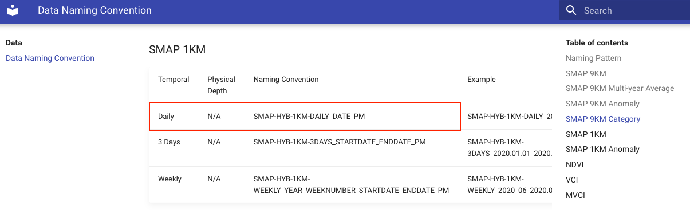

library(tidyverse)
library(curl)ASA Ag Hackathon Workshop Series:
Volumetric Water Content pt. 2
Pre-requisites
To be able to fully follow and understand this tutorial, you should have a good understanding of:
- R language
- Data wrangling and ploting with
tidyverse - Use of pipes
%>%(or|>)
- Iteration (
forloops andpurrrnested data frames)
Not up to to speed? Not a problem! Here are some workshop resources for you to catch up:
This tutorial was developed to fulfill 2 main objectives:
- Download SMAP data
- Wrangle and visualize it
1 Objective #1 - Downloading SMAP data
1.1 Setup
Let’s load the necessary packages:
Now let’s define some parameters of our data query.
I want to download SMAP data in the form of soil water volumetric content from June 15th 2023 to August 22nd 2023 for the entire state of Georgia, USA.
start <- as.Date("2023-06-15")
end <- as.Date("2023-08-22")
ndays <- as.numeric(end - start)
stateFIPS <- 13 #Georgia1.2 Defining URLs
The way we make data query is through calling a URL following a pre-defined format that includes our variables of interest.
To determine which data products can be retrieved and how to specify them, check this source.
Our goal with this tutorial is to query and download:
- Variable of interest: SMAP soil volumetric water content
- Spatial resolution: 1 KM
- Temporal resolution: Daily
- Temporal extent: state of Georgia
 To do this in code, we need to create a URL query for each individual date.
df <- data.frame(n = 1:ndays) %>%
# Creating individual dates
mutate(date = start + n) %>%
# Replacing - with . to match URL requirements
mutate(date_dot = str_replace_all(date, "-",".")) %>%
# Combining our parameters with the URL specification
mutate(layer = paste0("SMAP-HYB-1KM-DAILY_",
date_dot,
"_PM")) %>%
mutate(fips = stateFIPS) %>%
# Creating the URLs matching all the required info
mutate(url = paste0('https://cloud.csiss.gmu.edu/smap_service?service=WPS&version=1.0.0&request=Execute&identifier=GetFileByFips&DataInputs=layer=',
layer,
';fips=',
fips))
head(df) n date date_dot layer fips
1 1 2023-06-16 2023.06.16 SMAP-HYB-1KM-DAILY_2023.06.16_PM 13
2 2 2023-06-17 2023.06.17 SMAP-HYB-1KM-DAILY_2023.06.17_PM 13
3 3 2023-06-18 2023.06.18 SMAP-HYB-1KM-DAILY_2023.06.18_PM 13
4 4 2023-06-19 2023.06.19 SMAP-HYB-1KM-DAILY_2023.06.19_PM 13
5 5 2023-06-20 2023.06.20 SMAP-HYB-1KM-DAILY_2023.06.20_PM 13
6 6 2023-06-21 2023.06.21 SMAP-HYB-1KM-DAILY_2023.06.21_PM 13
url
1 https://cloud.csiss.gmu.edu/smap_service?service=WPS&version=1.0.0&request=Execute&identifier=GetFileByFips&DataInputs=layer=SMAP-HYB-1KM-DAILY_2023.06.16_PM;fips=13
2 https://cloud.csiss.gmu.edu/smap_service?service=WPS&version=1.0.0&request=Execute&identifier=GetFileByFips&DataInputs=layer=SMAP-HYB-1KM-DAILY_2023.06.17_PM;fips=13
3 https://cloud.csiss.gmu.edu/smap_service?service=WPS&version=1.0.0&request=Execute&identifier=GetFileByFips&DataInputs=layer=SMAP-HYB-1KM-DAILY_2023.06.18_PM;fips=13
4 https://cloud.csiss.gmu.edu/smap_service?service=WPS&version=1.0.0&request=Execute&identifier=GetFileByFips&DataInputs=layer=SMAP-HYB-1KM-DAILY_2023.06.19_PM;fips=13
5 https://cloud.csiss.gmu.edu/smap_service?service=WPS&version=1.0.0&request=Execute&identifier=GetFileByFips&DataInputs=layer=SMAP-HYB-1KM-DAILY_2023.06.20_PM;fips=13
6 https://cloud.csiss.gmu.edu/smap_service?service=WPS&version=1.0.0&request=Execute&identifier=GetFileByFips&DataInputs=layer=SMAP-HYB-1KM-DAILY_2023.06.21_PM;fips=13df$url[[1]][1] "https://cloud.csiss.gmu.edu/smap_service?service=WPS&version=1.0.0&request=Execute&identifier=GetFileByFips&DataInputs=layer=SMAP-HYB-1KM-DAILY_2023.06.16_PM;fips=13"1.3 Batch download
The code below will
- iterate over each URL we created
- make an API call, and
- download the .tif file containing soil volumetric water content for each date, saving it in a folder called
data
Warning
The code below will download 49 files to your system, and it will take a moment depending on your internet speed.
for (i in 1:nrow(df)) { # Loop over the URLs
df$url[[i]] %>%
# Download the XML file
readLines(warn = FALSE) %>%
# Process the XML file
strsplit("(<|>)") %>%
unlist() %>%
# Find the url of the GeoTIFF file to download
grep("https://.*.tif", ., value = TRUE) %>%
# Download the file into a specified location
curl_download(., file.path("data", gsub("^h.*/", "", .)))
}